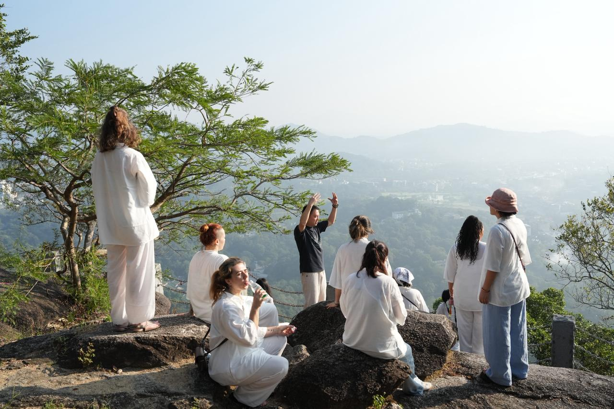
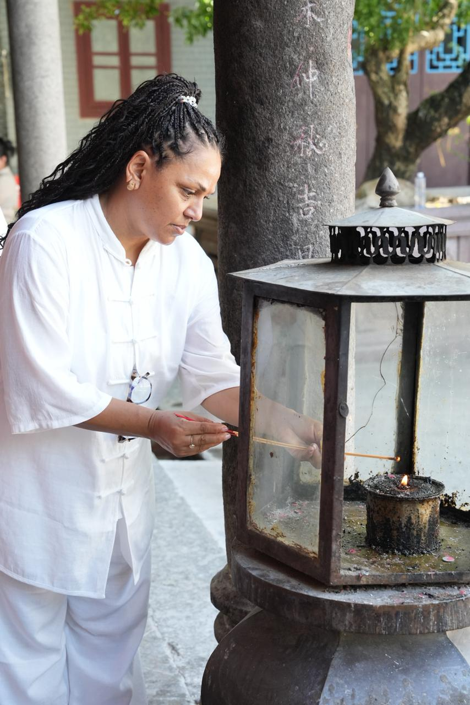
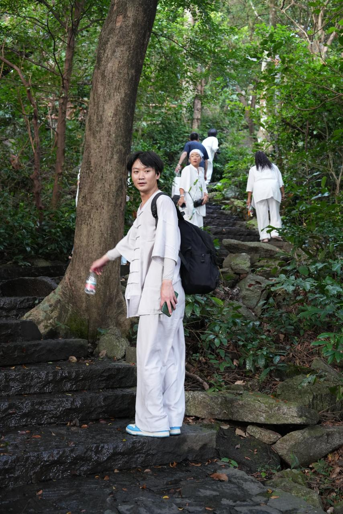

Eine Reise zurück zu deinem Ursprung
Ganzheitliche Begleitung für Frauen mit Endometriose in China
Dein Körper kämpft nicht gegen dich.
Vielleicht ist es an der Zeit, aufzuhören gegen ihn zu kämpfen.
Komm mit uns nach China.
Zu den Wurzeln einer Medizin, die seit Jahrtausenden die Sprache des weiblichen Körpers versteht.
Zu den Nebelbergen Yunnans.
Zu Ruhe, Akzeptanz, Gemeinschaft als Frauen und neuer Hoffnung.
Und vielleicht ein Stück näher zu deiner weiblichen Essenz
Vielleicht hast du bereits einen langen Weg hinter dir.
Vielleicht wurden deine Schmerzen mit Hormonen unterdrückt, vielleicht hast du bereits Operationen hinter dir oder dir wurde gesagt, dass weitere Eingriffe unvermeidbar sind. Viele Frauen mit Endometriose leben jahrelang zwischen Symptombehandlung, Unsicherheit und dem Gefühl, dass ihr Körper gegen sie arbeitet.
Doch was wäre, wenn dein Körper nicht dein Gegner ist?
Was wäre, wenn die Schmerzen, Erschöpfung, Entzündungen und Zyklusbeschwerden eine Sprache sprechen, die verstanden werden möchte?
In der Traditionellen Chinesischen Medizin betrachten wir Endometriose nicht als isolierte Erkrankung, sondern als Ausdruck eines tieferen Ungleichgewichts. Statt Symptome zu unterdrücken, fragen wir: Warum ist der Körper aus seiner Balance geraten? Was möchte er uns mitteilen? Und wie können wir ihn dabei unterstützen, zu seiner natürlichen Ordnung zurückzufinden?
In einer Zeit, in der immer mehr Frauen nach natürlichen und ganzheitlichen Wegen suchen, öffnet uns China die Tür zu einem jahrtausendealten Wissen, das den weiblichen Körper nicht als Problem/Objekt betrachtet, sondern als intelligentes System, das nach Balance strebt.
Wo die moderne Medizin oft fragt: „Was müssen wir entfernen?“, fragt die Chinesische Medizin: „Was müssen wir nähren, damit der Körper wieder in seine natürliche Ordnung findet?“
Woche 1: Die Klinik in Shenzhen
Unsere Reise beginnt in Shenzhen, wo wir die erste Woche in einer erfahrenen TCM-Klinik verbringen. Durch eine umfassende Diagnostik erstellen wir einen individuellen Therapieplan, der auf deine persönliche Geschichte, deine Beschwerden und deine Konstitution abgestimmt ist.
Wir betrachten nicht nur die körperlichen Symptome, sondern auch Ernährung, Lebensstil, Stress, emotionale Belastungen und die tieferen Muster, die zu der Erkrankung beigetragen haben könnten. Gemeinsam entwickeln wir einen nachhaltigen Weg, der dich auch nach der Reise weiter begleiten kann.
Bereits in dieser ersten Woche beginnen wir mit deiner individuellen Kräutertherapie. Ergänzend nutzen wir moderne biomedizinische Verfahren wie die BianHu Bio-Medizinische Resonanz-Massage sowie weitere unterstützende Technologien, die dabei helfen können, Durchblutung, Gewebeversorgung und die natürlichen Regulationsprozesse des Körpers anzuregen.
Die Chinesische Medizin spricht von 血海 (Xuè Hǎi) – dem Meer des Blutes, von 衝脈 (Chōng Mài) – dem Meer der Weiblichkeit und Fruchtbarkeit, von 子宮 (Zǐ Gōng) – dem Palast des Kindes. Allein die Sprache zeigt eine tief verwurzelte Ehrfurcht vor dem weiblichen Körper.
Die Gebärmutter ist kein Organ, das bekämpft werden muss.
Sie ist ein Palast.
Der Zyklus ist kein Problem.
Er ist ein Rhythmus.
Die Menstruation ist kein lästiger Nebeneffekt.
Sie ist eine Botschaft.
Woche 2: Tiefe Transformation in Yunnan
Nach der ersten Woche reisen wir gemeinsam in die magische Natur Yunnans. Umgeben von den Nebelbergen, uralten Wäldern und der Ruhe des ländlichen Chinas verbringen wir unsere Zeit in einem wunderschönen 5-Sterne-Hotel, fernab vom Lärm und der Hektik des Alltags.
Hier beginnt die tiefere Heilungsreise.
In China erleben wir nicht nur die Medizin, sondern auch die Weisheit einer Kultur, die sich zunehmend wieder auf ihre traditionellen Wurzeln besinnt. Zurück zur Natur. Zurück zu den Zyklen. Zurück zur Verbindung zwischen Mensch und Erde.



Diese zweite Phase der Reise ist dem Yin gewidmet.
Dem Nähren.
Dem Empfangen.
Dem Loslassen.
Dem Erinnern.
Viele Frauen mit Endometriose haben über Jahre gelernt zu kämpfen, durchzuhalten und zu funktionieren. Hier darfst du erfahren, wie es sich anfühlt, nicht mehr gegen deinen Körper zu arbeiten, sondern mit ihm.
Durch ausreichend Schlaf, tiefgehende Entspannung, nährendes Essen, sanfte Bewegung, Qi Gong, Atemarbeit, Meditation und viel Zeit in der Natur schaffen wir die Bedingungen, in denen Regeneration überhaupt erst möglich wird.
Wir lernen wieder, was es bedeutet, als Frau mit den natürlichen Rhythmen des Lebens zu leben – mit Ebbe und Flut, Aktivität und Ruhe, Yang und Yin.
Während der gesamten Reise begleiten wir die Kräutertherapie weiter und beobachten gemeinsam die Veränderungen auf körperlicher, emotionaler und energetischer Ebene. Du wirst von einem erfahrenen Team getragen und unterstützt.
Programmdauer wählen:
Inklusive Leistungen:
*Hinweis: Alle Preise beinhalten keine individuell verschreibungspflichtige Kräutermedizin.
Sie ist eine Einladung.
Eine Einladung, einen anderen Weg kennenzulernen.
Einen Weg, der nicht auf Unterdrückung basiert, sondern auf Verständnis.
Nicht auf Kampf, sondern auf Kooperation.
Nicht auf Trennung, sondern auf Rückverbindung.
Eine Reise zurück zu deinem Körper.
Zurück zu deiner Weiblichkeit.
Zurück zu deinem Ursprung.